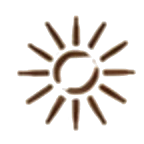
GRUPO DE ESTUDOS DE BENZIMENTO
Abençoe os seus. E seja abençoada no processo.
Um grupo de estudos continuado para aprender a benzer com fundamento e proteção, acompanhada de gente que benze também.
Quero entrar no grupo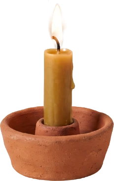
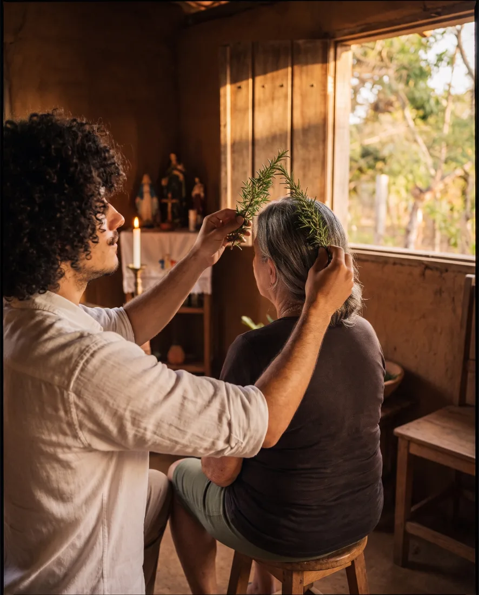
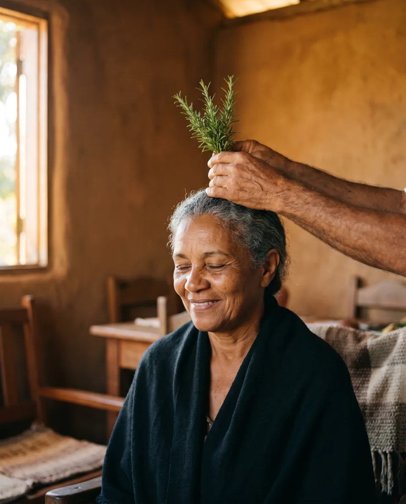
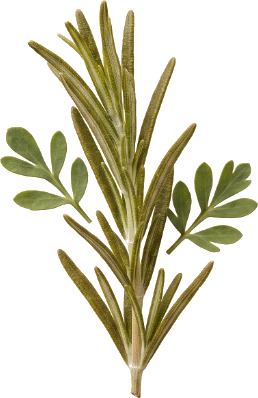
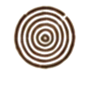
+44 mil alunos
Formados pela Escola Contém Magia
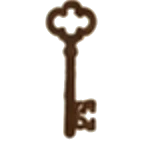
Edu Parmeggiani
Sacerdote, cientista da religião e escritor
Todo mês, ao vivo
Roda das Benzedeiras com o Edu
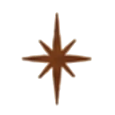
Qualquer fé
A sua crença é respeitada aqui
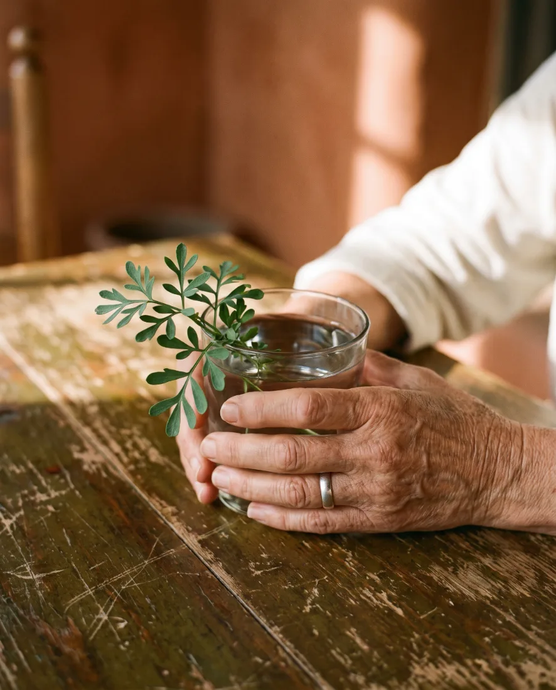
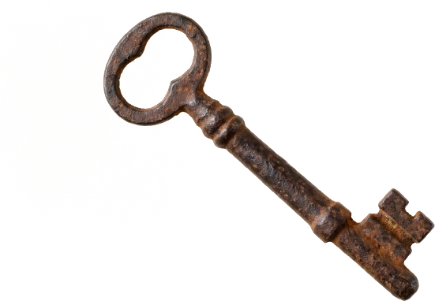
As pessoas já procuram você.
Quando a criança não dorme, é você que chamam. Quando a amiga chega carregada, é com você que ela senta.
Você escuta, acalma, reza baixinho. E a pessoa vai embora mais leve.
Você faz isso há anos. Do seu jeito, com o que lembra da avó e com o que foi aprendendo pelo caminho.
Só que ninguém te ensinou o porquê de cada gesto. Nem como se proteger depois.
Por isso, às vezes, quem fica pesada é você.
Mão de benzedeira você já tem. O que ainda não te deram foi o fundamento.
O que você aprende a fazer.
- 01Montar e consagrar o seu altar de proteção
- 02Conhecer os números da benzedeira e o seu sentido
- 03Preparar o espaço e se proteger antes de benzer
- 04Benzer adultos, crianças, animais, plantas e a casa
- 05Benzer à distância, com foto ou peça de roupa
- 06Fazer o pós-benzimento para nada ficar com você
- 07Resgatar benzimentos como fechamento de corpo e mau-olhado
O primeiro lugar onde você benze é a sua casa, com os seus e com você mesma.
Benzimento é cuidado complementar e não substitui tratamento médico.
Quero aprender a benzer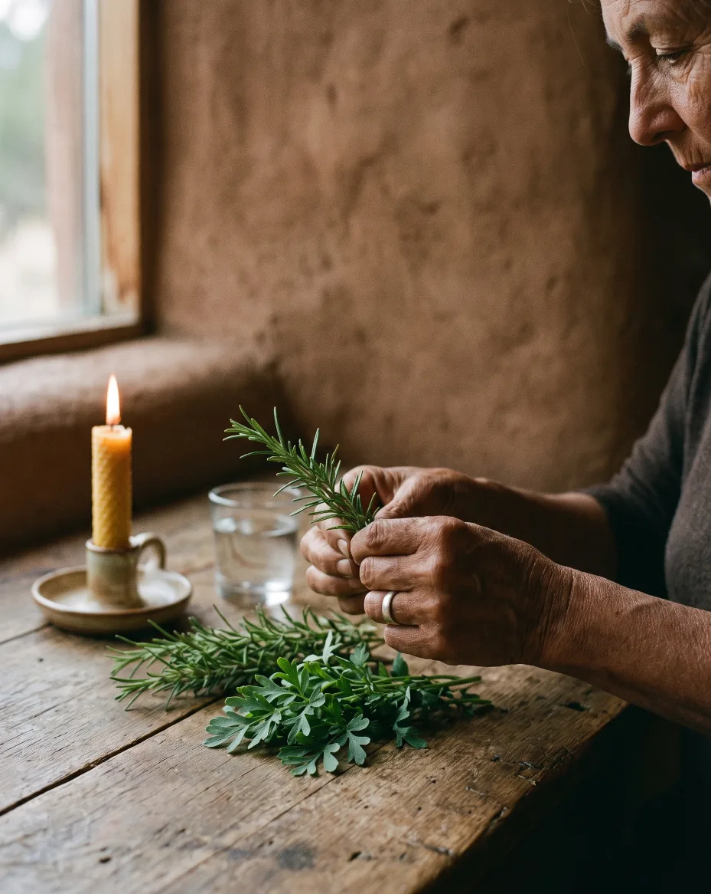
Três pilares para benzer. Sete forças para não se esvaziar.
Todo benzimento se apoia em três pilares.
Verbo
A palavra que abençoa. Reza, oração e palavra de comando, ditas em voz alta.
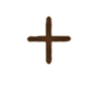
Sinal
O gesto que firma. Círculo, cruz, X ou estrela, escolhido de acordo com a sua fé.
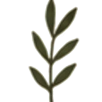
Rito
O ato sagrado. A erva, o objeto, o ponto do corpo e a mente alinhada.
E toda benzedeira benze com uma força que vem de fora dela.
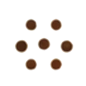
Comunidade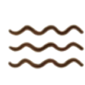
ÁguaQuem benze só com a própria energia se esvazia. Por isso, aqui você aprende primeiro a se sustentar.
A imposição de mãos está entre as Práticas Integrativas e Complementares reconhecidas pelo SUS. O benzimento é uma das formas dela.
O coração do grupo
A Roda das Benzedeiras. Todo mês, ao vivo.
Uma vez por mês, o grupo se reúne ao vivo comigo. A gente pratica junto, tira dúvidas e acompanha o desenvolvimento de cada uma.
E na Roda o grupo também é benzido. É o momento de quem cuida receber cuidado.
A data fica no calendário do grupo. Se não puder estar na hora, fica gravado.
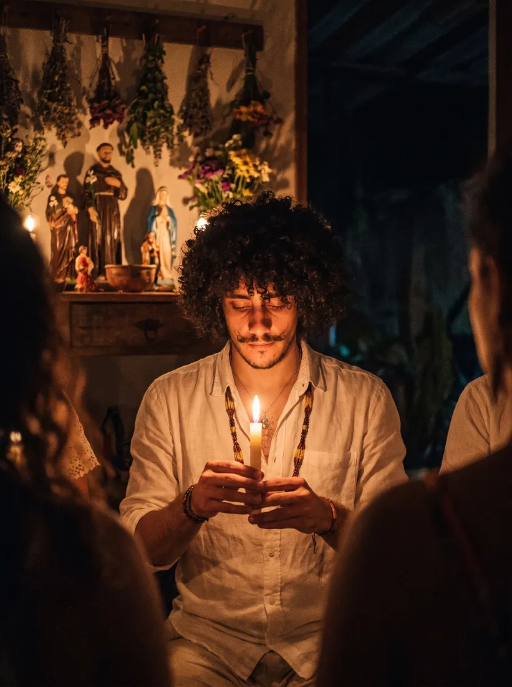
E entre uma Roda e outra.
O grupo não tem data para acabar. Rezas e benzimentos novos entram todo mês.
E dois presentes para quem entra.
Oficina de Corte Energético com Velas
A força do fogo para cortar energias nocivas e desfazer cargas pesadas.
Guia de Saberes Ancestrais
Material de consulta da escola com saberes ancestrais, para ter sempre à mão.
Quem conduz
Edu Parmeggiani.
Sacerdote de culto aos ancestrais, cientista da religião em formação, escritor e benzedeiro. Fundador da Escola Contém Magia, por onde já passaram mais de 44 mil alunos. Autor de Magia com Plantas, publicado pela Editora Planeta.
Eu cresci sendo levado à benzedeira. Criança sem dormir, chorando, com algo atravessado: a gente levava na benzedeira.
Na adolescência, entrei numa religião que via o benzimento como coisa do mal. Me afastei. Anos depois, foi um benzimento que me reconciliou com a espiritualidade.
Desde então, são mais de 15 anos estudando e praticando. E sim, homem também benze.
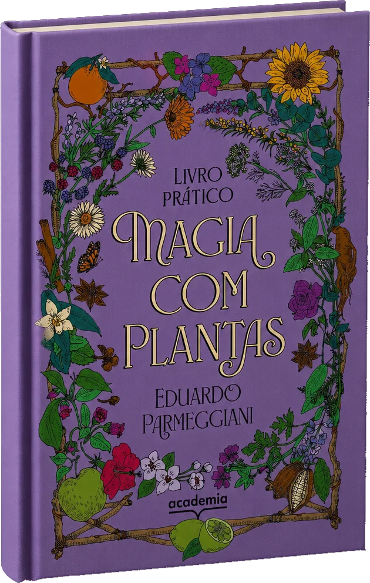
Magia com Plantas
Editora Planeta
Tudo o que você leva ao entrar.
- Aulas gravadas da trilha de benzimento
- Roda das Benzedeiras ao vivo, todo mês
- Biblioteca de Rezos, com pedidos de reza
- Comunidade no aplicativo da escola
- Rezas e benzimentos novos todo mês
- Oficina de Corte Energético com Velas
- Guia de Saberes Ancestrais
- 15 dias de garantia
Escolha como você quer caminhar.
Valor de referência do grupo: R$ 497 por trimestre.
Os dois planos incluem tudo o que está na lista acima.
Plano Anual
R$ 397 à vista
ou 12x de R$ 39,69
Cerca de R$ 33 por mês.
- Acesso a todo o grupo por 12 meses
- R$ 151 a menos que quatro trimestres
Plano Trimestral
R$ 137 à vista
ou 3x de R$ 48,36
Cerca de R$ 46 por mês.
- Acesso a todo o grupo por 3 meses
- Renovação automática a cada três meses
Três trimestres pagos, um ano inteiro de caminhada. Na tradição da benzedeira, o três é o número que sustenta.
Pagamento no pix ou no cartão.
Perguntas frequentes.
Consegue. As aulas e a Roda ficam gravadas, e muitos benzimentos levam poucos minutos para fazer.
Não. Vela, água e ervas comuns resolvem a maior parte. Muitos benzimentos usam só a mão e a palavra.
Confirmada a inscrição, as instruções chegam por e-mail e WhatsApp. Tudo fica no aplicativo próprio da escola.
Carta de fechamento
Uma última coisa, de mim para você.
Eu não acredito em coincidência quando o assunto é espiritualidade. Se você chegou até aqui, existe um convite.
A espiritualidade já abriu a porta. Falta você atravessar.
O divino não precisa da sua dor para te usar como canal.
Muita gente que eu nunca vou alcançar vai receber bênçãos pelas suas mãos. Saber disso já me basta.
Te espero na Roda.
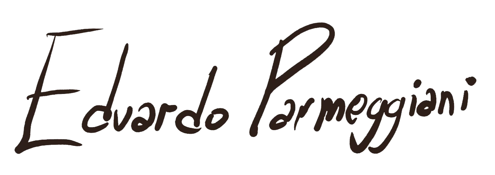